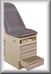
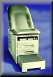
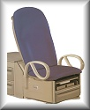

Brewer Basic Exam Table
-
The Brewer Companies most cost effective medical exam table.

Brewer Access Exam Table.
-
A top quality medical exam table with 500lb capacity and optional heated drawers.

Access High-Low Exam Table
-
A version of Brewer's standard exam table in a powered High/Low wheelchair compatable model.